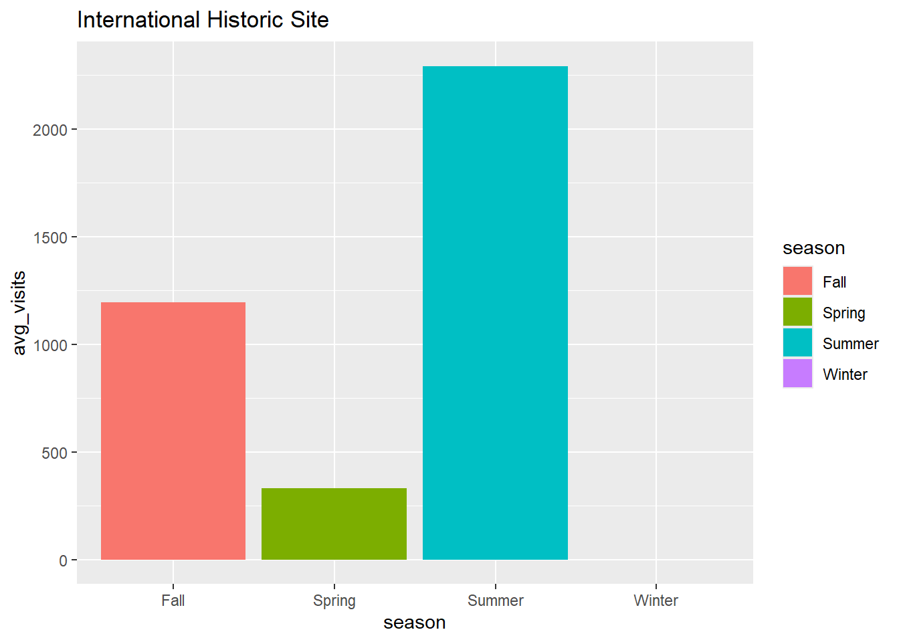
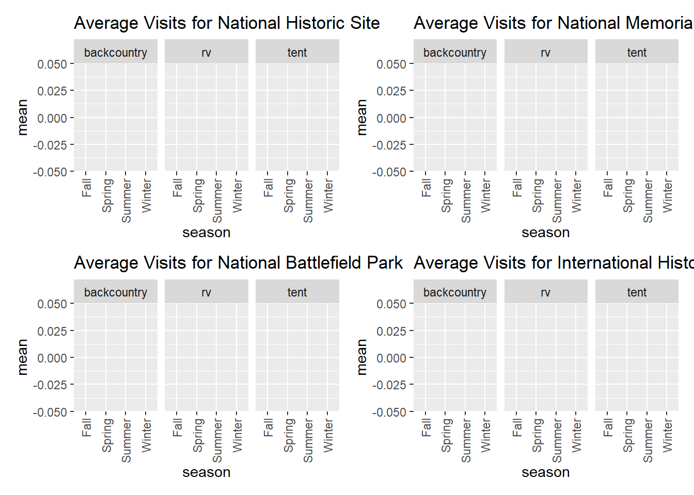
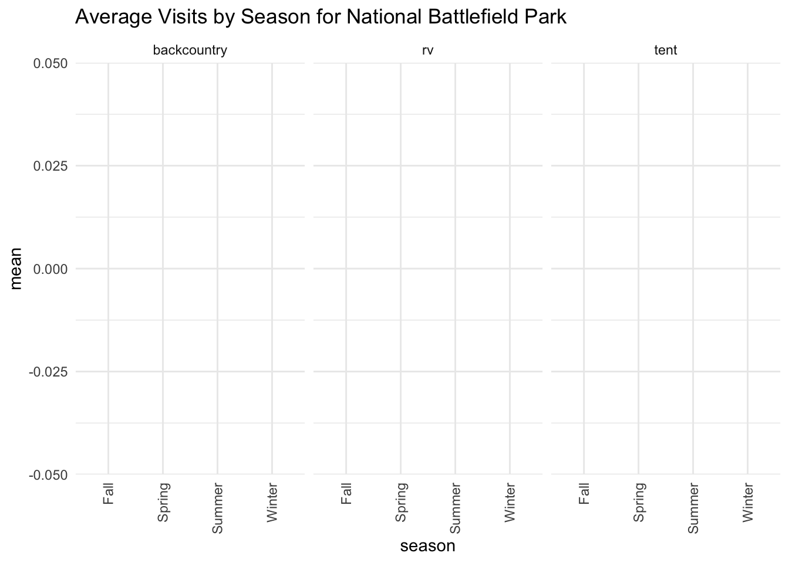
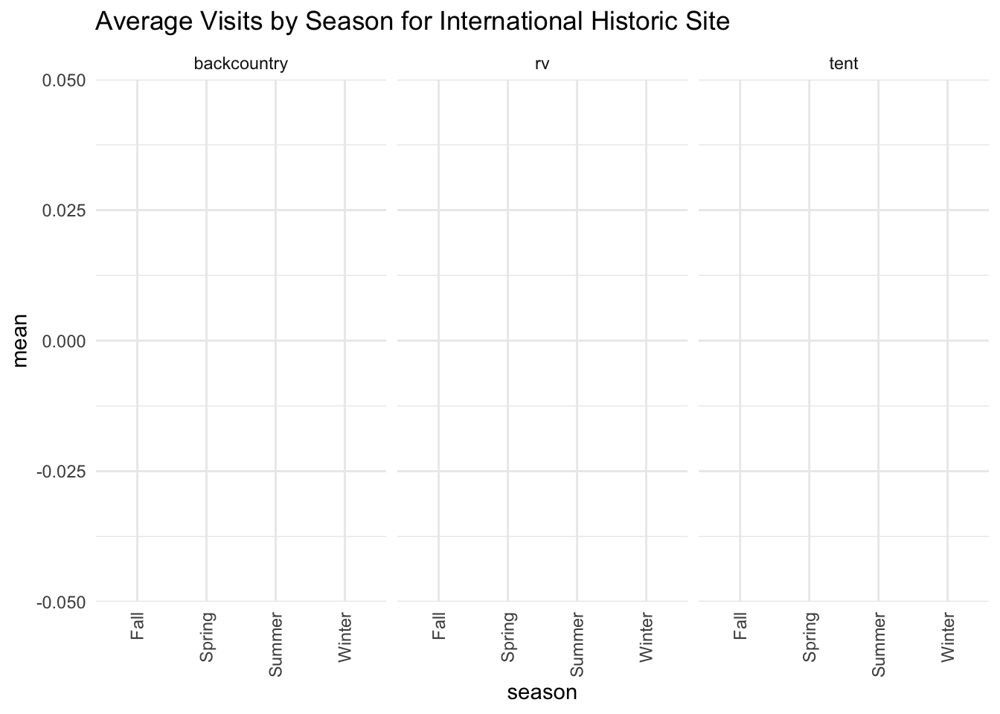
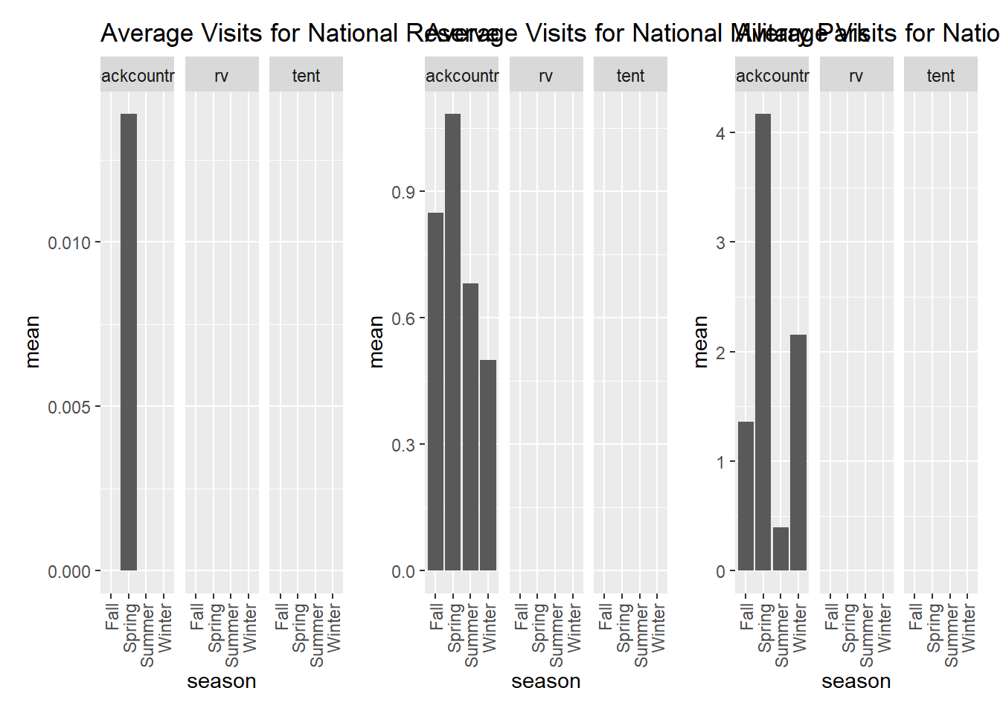
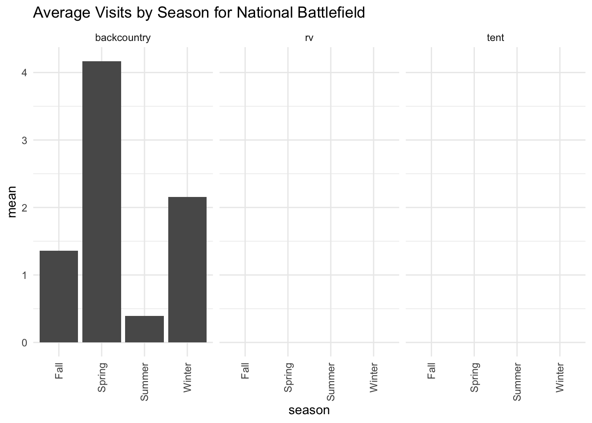
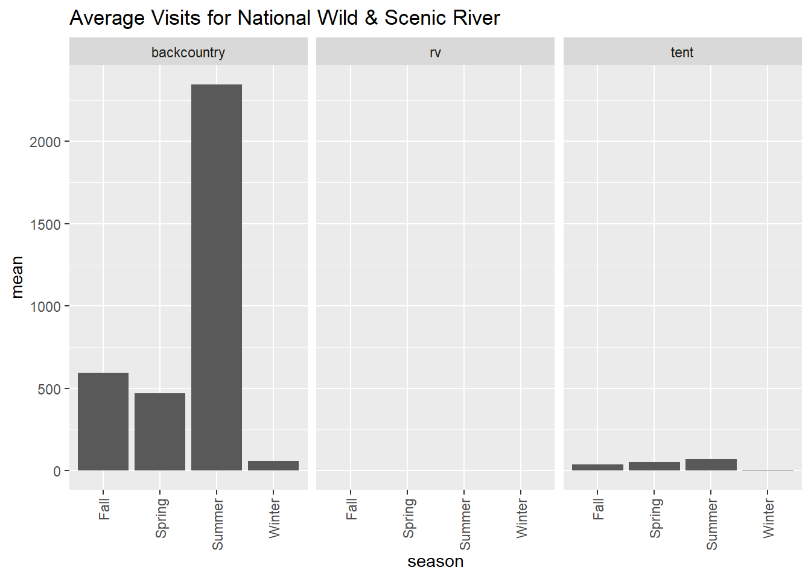
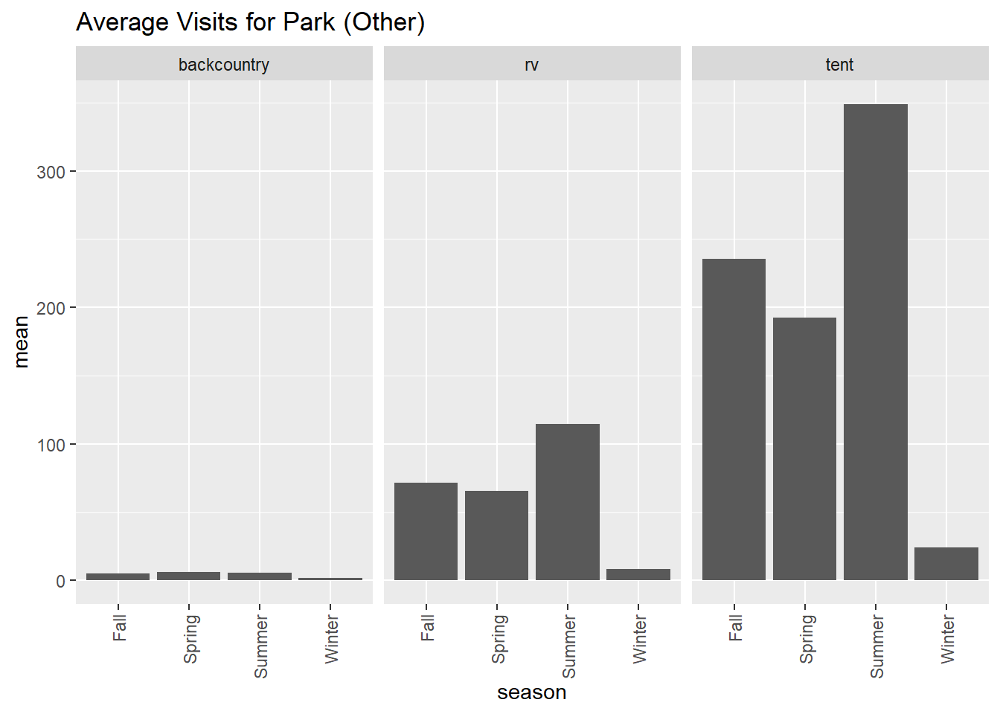
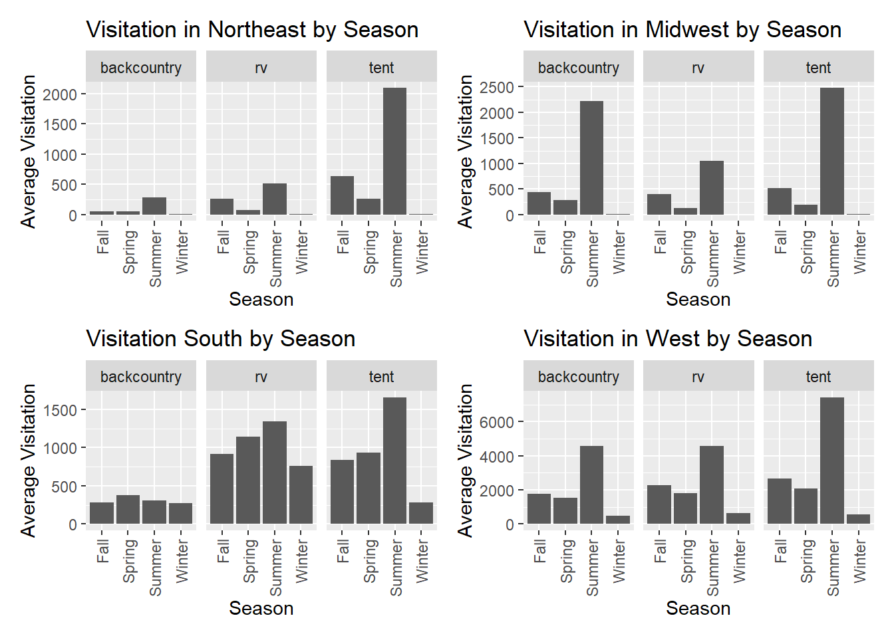

res=GET('https://developer.nps.gov/api/v1/parks?limit=500&api_key=B9nDpbkbrb3kSOjz6kXSxMJ3d6MSpUvt1QqYdeyn')
data = res %>% content("text") %>% jsonlite::fromJSON() %>% as_tibble()
NPS_data=data %>% unnest(data) %>% select(fullName,latitude,longitude,topics, activities,states, parkCode) %>% janitor::clean_names() %>%
mutate(
latitude = as.numeric(latitude),
longitude = as.numeric(longitude)
) %>% unnest(activities, names_sep = "_") %>%
unnest(topics, names_sep = "_")
visitation_data <-
read_csv("data/Query Builder for Public Use Statistics (1979 - Last Calendar Year).csv") %>%
janitor::clean_names() %>%
mutate(unit_code = tolower(unit_code)) %>%
rename(park_code = unit_code,
full_name = park_name) %>%
select(full_name, park_code, park_type, region, state, year, month, recreation_visits, tent_campers, rv_campers, tent_campers, backcountry)## Rows: 101419 Columns: 35
## ── Column specification ────────────────────────────────────────────────────────
## Delimiter: ","
## chr (10): ParkName, UnitCode, ParkType, Region, State, ParkNameTotal, UnitCo...
## dbl (3): Year, Month, YearTotal
## num (22): RecreationVisits, NonRecreationVisits, RecreationHours, NonRecreat...
##
## ℹ Use `spec()` to retrieve the full column specification for this data.
## ℹ Specify the column types or set `show_col_types = FALSE` to quiet this message.combined_data <- full_join(NPS_data, visitation_data, by = c("park_code"))## Warning in full_join(NPS_data, visitation_data, by = c("park_code")): Detected an unexpected many-to-many relationship between `x` and `y`.
## ℹ Row 1 of `x` matches multiple rows in `y`.
## ℹ Row 1 of `y` matches multiple rows in `x`.
## ℹ If a many-to-many relationship is expected, set `relationship =
## "many-to-many"` to silence this warning.visitation_data %>%
group_by(park_type, month) %>%
summarize(total_visitation = sum(recreation_visits)) %>%
plot_ly(x = ~as.factor(month), y = ~total_visitation, type = "scatter", mode = "lines", color = ~park_type)## `summarise()` has grouped output by 'park_type'. You can override using the
## `.groups` argument.## Warning in RColorBrewer::brewer.pal(N, "Set2"): n too large, allowed maximum for palette Set2 is 8
## Returning the palette you asked for with that many colors
## Warning in RColorBrewer::brewer.pal(N, "Set2"): n too large, allowed maximum for palette Set2 is 8
## Returning the palette you asked for with that many colorsvisitation_data %>%
group_by(park_type) %>%
summarize(parks = n_distinct(full_name)) %>%
arrange(desc(parks)) %>% knitr::kable()| park_type | parks |
|---|---|
| National Monument | 73 |
| National Historic Site | 72 |
| National Historical Park | 58 |
| National Park | 55 |
| National Memorial | 32 |
| National Recreation Area | 18 |
| Park (Other) | 11 |
| National Battlefield | 10 |
| National Seashore | 10 |
| National Military Park | 9 |
| National Preserve | 7 |
| National Wild & Scenic River | 7 |
| National Battlefield Park | 4 |
| National Parkway | 4 |
| National River | 4 |
| National Lakeshore | 3 |
| International Historic Site | 1 |
| National Reserve | 1 |
As seen in the graph, national parks have the highest total visitation among all park types. Interestingly, there more national monuments, national historic sites, and national historic parks than national parks, even though all of these have less total visitation than national parks.
The visitation_data data set also includes information
on visitation split by tent_campers,
backcountry, and rv_campers. We were
interested in looking at the total visitation split by these three
visitation types and by season.
visitation_data %>%
mutate(season = case_when(
month %in% c(12,1,2) ~ "Winter",
month %in% c(3,4,5) ~ "Spring",
month %in% c(6,7,8) ~ "Summer",
TRUE ~ "Fall"
)) %>%
group_by(season) %>%
summarize(total_tent = sum(tent_campers),
backcountry_visits = sum(backcountry),
total_rv = sum(rv_campers)) %>%
pivot_longer(
total_tent:total_rv,
values_to = "total_visit",
names_to = "type_visit",
names_prefix = "total_"
) %>%
plot_ly(x = ~season, y = ~total_visit, color = ~type_visit, type = "bar")In fall, winter, and spring, the highest visitation is
tent_campers, with a peak summer. Interestingly and
unsurprisingly, the highest visitation in winter is
rv_campers. This is probably due to weather conditions not
permitting tent camping, but allows for rv camping. For fall, winter,
and spring there is a similar trend where backcountry has
the lowest total visitation and tent_campers has the
highest visitation. In winter, rv_campers has the highest
total visitation, then tent_campers, and then
backcountry.
Next, we were interested in seeing the trends in park visitation by season and park type.
park_types <- unique(visitation_data$park_type)
plots <- list()
for (i in seq_along(park_types)) {
plots[[i]] <- visitation_data %>%
filter(park_type == park_types[i]) %>%
mutate(season = case_when(
month %in% c(12, 1, 2) ~ "Winter",
month %in% c(3, 4, 5) ~ "Spring",
month %in% c(6, 7, 8) ~ "Summer",
TRUE ~ "Fall"
)) %>%
group_by(season) %>%
summarize(avg_visits = mean(recreation_visits, na.rm = TRUE)) %>%
ggplot(aes(x = season, y = avg_visits, fill = season)) +
geom_col() +
ggtitle(paste("Average Visits by Season for", park_types[i]))
} Most of the parks have a similar trend in average visitation, where summer is the highest and winter is the lowest.
For national lakeshore parks, there is a really stark
difference in average visits between summer and the other seasons.
combined_data %>%
group_by(park_type) %>%
summarize(count = n_distinct(activities_name)) %>% arrange(desc(count))## # A tibble: 19 × 2
## park_type count
## <chr> <int>
## 1 National Park 97
## 2 <NA> 95
## 3 National Recreation Area 86
## 4 National Monument 78
## 5 National Historical Park 67
## 6 National Seashore 66
## 7 National River 64
## 8 National Preserve 63
## 9 National Lakeshore 55
## 10 National Wild & Scenic River 53
## 11 National Historic Site 52
## 12 Park (Other) 52
## 13 National Memorial 44
## 14 National Battlefield 43
## 15 National Military Park 43
## 16 National Battlefield Park 42
## 17 National Reserve 41
## 18 National Parkway 33
## 19 International Historic Site 3activities_count <-
combined_data %>%
filter(park_type == "National Lakeshore") %>% distinct(activities_name) %>% nrow()
combined_data %>%
filter(park_type == "National Lakeshore") %>% distinct(activities_name) %>% knitr::kable()| activities_name |
|---|
| Boating |
| Motorized Boating |
| Sailing |
| Boat Tour |
| Camping |
| Backcountry Camping |
| Canoe or Kayak Camping |
| Group Camping |
| Fishing |
| Freshwater Fishing |
| Guided Tours |
| Hiking |
| Hunting and Gathering |
| Hunting |
| Paddling |
| Kayaking |
| Junior Ranger Program |
| SCUBA Diving |
| Snowshoeing |
| Swimming |
| Freshwater Swimming |
| Wildlife Watching |
| Birdwatching |
| Park Film |
| Shopping |
| Bookstore and Park Store |
| Gift Shop and Souvenirs |
| Auto and ATV |
| Scenic Driving |
| Astronomy |
| Stargazing |
| Biking |
| Road Biking |
| Jet Skiing |
| Car or Front Country Camping |
| RV Camping |
| Climbing |
| Ice Climbing |
| Fly Fishing |
| Food |
| Picnicking |
| Hands-On |
| Volunteer Vacation |
| Backcountry Hiking |
| Front-Country Hiking |
| Canoeing |
| Stand Up Paddleboarding |
| Skiing |
| Cross-Country Skiing |
| Snow Play |
| Snowmobiling |
| Museum Exhibits |
| Self-Guided Tours - Walking |
| Self-Guided Tours - Auto |
| Tubing |
Based on the activities offered in National Lakeshore, we can see
that most of the activities revolve around water, such as
canoeing, fly fishing, and
jet skiing. Interestingly, at National Lakeshore, there are
skiing activities, but the winter average visits are still the
lowest.
##National Preserve Seasonal Trends and Activities
plots[10]## [[1]]Another interesting pattern is that in National Preserve, there is a higher average visitation in spring than summer and winter has a higher visitation than fall.
activities_count <-
combined_data %>%
filter(park_type == "National Preserve") %>% distinct(activities_name) %>% nrow()
combined_data %>%
filter(park_type == "National Preserve") %>% distinct(activities_name) %>% knitr::kable()| activities_name |
|---|
| Arts and Culture |
| Cultural Demonstrations |
| Auto and ATV |
| ATV Off-Roading |
| Scenic Driving |
| Astronomy |
| Stargazing |
| Biking |
| Road Biking |
| Boating |
| Boat Tour |
| Camping |
| Backcountry Camping |
| Car or Front Country Camping |
| Group Camping |
| RV Camping |
| Food |
| Picnicking |
| Guided Tours |
| Bus/Shuttle Guided Tour |
| Hiking |
| Backcountry Hiking |
| Front-Country Hiking |
| Hunting and Gathering |
| Hunting |
| Paddling |
| Canoeing |
| Kayaking |
| Junior Ranger Program |
| Wildlife Watching |
| Birdwatching |
| Park Film |
| Museum Exhibits |
| Shopping |
| Bookstore and Park Store |
| Canoe or Kayak Camping |
| Fishing |
| Hands-On |
| Citizen Science |
| Gift Shop and Souvenirs |
| Mountain Biking |
| Climbing |
| Rock Climbing |
| Freshwater Fishing |
| Fly Fishing |
| Horse Trekking |
| Horseback Riding |
| Swimming |
| Freshwater Swimming |
| Auto Off-Roading |
| Horse Camping (see also Horse/Stock Use) |
| Off-Trail Permitted Hiking |
| Horse Camping (see also camping) |
| Self-Guided Tours - Walking |
| Living History |
| Motorized Boating |
| Self-Guided Tours - Auto |
| Historic Weapons Demonstration |
| Stand Up Paddleboarding |
| Saltwater Swimming |
| Skiing |
| Cross-Country Skiing |
| Snowshoeing |
There are 63 activities offered at this park. It is near the middle of the distribution of total activities, so the trend is not due to having many more activities offered than other park types. It seems like there is a much bigger variety in the types of activities offered at these parks. There are tours, stargazing, biking, picnicking, hunting, water activities, wildlife watching, museums and stores, as well as winter activities like skiing, and snowshoeing.
plots[18]## [[1]]
This plot is interesting because there is no average visitation in winter.
activities_count <-
combined_data %>%
filter(park_type == "International Historic Site") %>% distinct(activities_name) %>% nrow()
combined_data %>%
filter(park_type == "International Historic Site") %>% distinct(activities_name) %>% knitr::kable()| activities_name |
|---|
| Paddling |
| Junior Ranger Program |
| Wildlife Watching |
There are 3 activities offered at this park type. It makes sense that
there is no visitation in the winter because the only activities offered
are paddling, junior ranger program and
wildlife watching. There are no activities that would
really be done in the winter at these parks.
##Average Visitation by Visit and Park Type
park_types <- unique(visitation_data$park_type)
plots <- list()
for (i in seq_along(park_types)) {
visit_summary <- visitation_data %>%
drop_na() %>%
filter(park_type == park_types[i]) %>%
mutate(season = case_when(
month %in% c(12, 1, 2) ~ "Winter",
month %in% c(3, 4, 5) ~ "Spring",
month %in% c(6, 7, 8) ~ "Summer",
TRUE ~ "Fall"
)) %>%
group_by(season) %>%
summarize(
mean_tent = mean(tent_campers, na.rm = TRUE),
mean_backcountry = mean(backcountry, na.rm = TRUE),
mean_rv = mean(rv_campers, na.rm = TRUE)
) %>%
pivot_longer(
cols = starts_with("mean_"),
names_to = "type_visit",
values_to = "mean",
names_prefix = "mean_"
)
plots[[i]] <- ggplot(visit_summary, aes(x = season, y = mean)) +
geom_col() +
facet_grid(~type_visit) +
ggtitle(paste("Average Visits by Season for", park_types[i])) +
theme(axis.text.x = element_text(angle = 90, vjust = 0.5, hjust = 1))
} plots[4]## [[1]]
plots[8]## [[1]]plots[17]## [[1]]
plots[18]## [[1]]
National Historic Sites, National Memorials, National Battlefield
Parks, International Historic Sites all had no faceted average visits.
These four park types do not have any rv_campers,
backcountry or tent_campers.
plots[16]## [[1]]
plots[15]## [[1]]plots[6]## [[1]]
National Reserve only had backcountry visitation in
spring. National Military Park had backcountry visitation
in all seasons, with mean visitation being highest in spring.
National Battlefield had backcountry visitation in all
seasons, with mean visitation being lowest in summer and highest in
spring.
plots[13]## [[1]]
National Wild and Scienic River has backcountry and
tent visitation, no rv visitation.
Interestingly though, the mean tent visitation is low for
all seasons, with a slight peak in summer.
plots[14]## [[1]]
This plot was interesting because the park type
Park (Other) has high tent mean visitation,
rv visitation, but low backcountry visitation.
It is the highest in spring and summer.
map of all national parks in US
leaflet(data = NPS_data) %>%
addTiles() %>%
addMarkers(~longitude, ~latitude) %>%
setView(lng = -98.583, lat = 39.828, zoom = 4)region_data_vists <- visitation_data %>%
mutate(region = case_when(
state %in% c("CT", "RI", "NH", "VT", "NJ", "NY", "PA", "MD", "ME", "MA") ~ "northeast",
state %in% c("IL","IN", "MI", "OH", "WI", "IA", "KS", "MN", "MO", "NE", "ND", "SD") ~ "midwest",
state %in% c("FL", "GA", "NC", "SC", "VA", "DE", "WV", "AL", "KY", "MS", "TN", "AR", "LA", "OK", "TX", "DC") ~ "south",
state %in% c("AK", "CA", "HI", "OR", "WA", "AZ", "CO", "ID", "MT", "NV", "NM", "UT", "WY") ~ "west",
state %in% c("VI", "AS", "GU", "PR") ~ "u.s. territory",
TRUE ~ "no state data"
))region_data <- combined_data %>%
mutate(region = case_when(
state %in% c("CT", "RI", "NH", "VT", "NJ", "NY", "PA", "MD", "ME", "MA") ~ "northeast",
state %in% c("IL","IN", "MI", "OH", "WI", "IA", "KS", "MN", "MO", "NE", "ND", "SD") ~ "midwest",
state %in% c("FL", "GA", "NC", "SC", "VA", "DE", "WV", "AL", "KY", "MS", "TN", "AR", "LA", "OK", "TX", "DC") ~ "south",
state %in% c("AK", "CA", "HI", "OR", "WA", "AZ", "CO", "ID", "MT", "NV", "NM", "UT", "WY") ~ "west",
state %in% c("VI", "AS", "GU", "PR") ~ "u.s. territory",
state == TRUE ~ "no state data"
)) %>% select(c(-full_name.y, -topics_id, -topics_name, -activities_id))region_data %>%
filter(region == "northeast") %>% drop_na() %>%
distinct(park_type) %>% knitr::kable()| park_type |
|---|
| National Park |
| National Historical Park |
| National Monument |
| National Historic Site |
| National Battlefield |
| National Seashore |
| Park (Other) |
| National Recreation Area |
| National Memorial |
| National Military Park |
| International Historic Site |
| National Wild & Scenic River |
region_data %>%
filter(region == "northeast") %>% distinct(activities_name) ## # A tibble: 84 × 1
## activities_name
## <chr>
## 1 Arts and Culture
## 2 Cultural Demonstrations
## 3 Astronomy
## 4 Stargazing
## 5 Biking
## 6 Boating
## 7 Camping
## 8 Group Camping
## 9 Climbing
## 10 Rock Climbing
## # ℹ 74 more rowsnortheast_plot <- region_data %>%
filter(region == "northeast") %>%
mutate(season = case_when(
month %in% c(12, 1, 2) ~ "Winter",
month %in% c(3, 4, 5) ~ "Spring",
month %in% c(6, 7, 8) ~ "Summer",
TRUE ~ "Fall"
)) %>%
group_by(season) %>%
summarize(
mean_tent = mean(tent_campers, na.rm = TRUE),
mean_backcountry = mean(backcountry, na.rm = TRUE),
mean_rv = mean(rv_campers, na.rm = TRUE)
) %>%
pivot_longer(
cols = starts_with("mean_"),
names_to = "type_visit",
values_to = "mean",
names_prefix = "mean_"
) %>% ggplot(aes(x = season, y = mean)) +
geom_col() +
facet_grid(~type_visit) + theme(axis.text.x = element_text(angle = 90, vjust = 0.5, hjust = 1)) +
labs(title = "Visitation in Northeast by Season",
x = "Season",
y = "Average Visitation")region_data %>%
filter(region == "midwest") %>%
drop_na() %>%
distinct(park_type) %>% knitr::kable()| park_type |
|---|
| National Monument |
| National Lakeshore |
| National Park |
| National Historical Park |
| National Historic Site |
| National Memorial |
| National River |
| National Wild & Scenic River |
| National Battlefield Park |
| National Preserve |
| National Battlefield |
region_data %>%
filter(region == "midwest") %>% distinct(activities_name) ## # A tibble: 84 × 1
## activities_name
## <chr>
## 1 Arts and Culture
## 2 Cultural Demonstrations
## 3 Astronomy
## 4 Stargazing
## 5 Food
## 6 Picnicking
## 7 Guided Tours
## 8 Self-Guided Tours - Walking
## 9 Hiking
## 10 Junior Ranger Program
## # ℹ 74 more rowsmidwest_plot <-
region_data %>%
filter(region == "midwest") %>%
mutate(season = case_when(
month %in% c(12, 1, 2) ~ "Winter",
month %in% c(3, 4, 5) ~ "Spring",
month %in% c(6, 7, 8) ~ "Summer",
TRUE ~ "Fall"
)) %>%
group_by(season) %>%
summarize(
mean_tent = mean(tent_campers, na.rm = TRUE),
mean_backcountry = mean(backcountry, na.rm = TRUE),
mean_rv = mean(rv_campers, na.rm = TRUE)
) %>%
pivot_longer(
cols = starts_with("mean_"),
names_to = "type_visit",
values_to = "mean",
names_prefix = "mean_"
) %>% ggplot(aes(x = season, y = mean)) +
geom_col() +
facet_grid(~type_visit) + theme(axis.text.x = element_text(angle = 90, vjust = 0.5, hjust = 1)) +
labs(title = "Visitation in Midwest by Season",
x = "Season",
y = "Average Visitation")region_data %>%
filter(region == "south") %>%
drop_na() %>%
distinct(park_type) %>%
knitr::kable()| park_type |
|---|
| National Historical Park |
| National Monument |
| National Recreation Area |
| National Historic Site |
| National Memorial |
| National Park |
| National Preserve |
| National River |
| National Parkway |
| National Wild & Scenic River |
| National Seashore |
| National Military Park |
| National Battlefield |
| National Battlefield Park |
| Park (Other) |
region_data %>%
filter(region == "south") %>%
distinct(activities_name) ## # A tibble: 89 × 1
## activities_name
## <chr>
## 1 Astronomy
## 2 Stargazing
## 3 Food
## 4 Picnicking
## 5 Guided Tours
## 6 Self-Guided Tours - Walking
## 7 Hands-On
## 8 Junior Ranger Program
## 9 Wildlife Watching
## 10 Birdwatching
## # ℹ 79 more rowssouth_plot <-
region_data %>%
filter(region == "south") %>%
mutate(season = case_when(
month %in% c(12, 1, 2) ~ "Winter",
month %in% c(3, 4, 5) ~ "Spring",
month %in% c(6, 7, 8) ~ "Summer",
TRUE ~ "Fall"
)) %>%
group_by(season) %>%
summarize(
mean_tent = mean(tent_campers, na.rm = TRUE),
mean_backcountry = mean(backcountry, na.rm = TRUE),
mean_rv = mean(rv_campers, na.rm = TRUE)
) %>%
pivot_longer(
cols = starts_with("mean_"),
names_to = "type_visit",
values_to = "mean",
names_prefix = "mean_"
) %>% ggplot(aes(x = season, y = mean)) +
geom_col() +
facet_grid(~type_visit) + theme(axis.text.x = element_text(angle = 90, vjust = 0.5, hjust = 1)) +
labs(title = "Visitation South by Season",
x = "Season",
y = "Average Visitation")region_data %>% filter(region == "west") %>% drop_na() %>%
distinct(park_type) %>% knitr::kable()| park_type |
|---|
| National Park |
| National Monument |
| National Historic Site |
| National Battlefield |
| National Recreation Area |
| National Historical Park |
| National Reserve |
| National Memorial |
| National Preserve |
| National Seashore |
region_data %>% filter(region == "west") %>% distinct(activities_name) ## # A tibble: 99 × 1
## activities_name
## <chr>
## 1 Arts and Culture
## 2 Astronomy
## 3 Stargazing
## 4 Biking
## 5 Camping
## 6 Backcountry Camping
## 7 Car or Front Country Camping
## 8 Group Camping
## 9 Canyoneering
## 10 Climbing
## # ℹ 89 more rowswest_plot <-
region_data %>%
filter(region == "west") %>%
mutate(season = case_when(
month %in% c(12, 1, 2) ~ "Winter",
month %in% c(3, 4, 5) ~ "Spring",
month %in% c(6, 7, 8) ~ "Summer",
TRUE ~ "Fall"
)) %>%
group_by(season) %>%
summarize(
mean_tent = mean(tent_campers, na.rm = TRUE),
mean_backcountry = mean(backcountry, na.rm = TRUE),
mean_rv = mean(rv_campers, na.rm = TRUE)
) %>%
pivot_longer(
cols = starts_with("mean_"),
names_to = "type_visit",
values_to = "mean",
names_prefix = "mean_"
) %>% ggplot(aes(x = season, y = mean)) +
geom_col() +
facet_grid(~type_visit) + theme(axis.text.x = element_text(angle = 90, vjust = 0.5, hjust = 1)) +
labs(title = "Visitation in West by Season",
x = "Season",
y = "Average Visitation")
northeast_plot + midwest_plot + south_plot + west_plot
Across all regions, it seems that summer has the highest visitation across regions, with the exception of backcountry hiking, which has a peak in spring.
For the Northeastern U.S. tent camping is by far the most popular visitation type. Interestingly, in this region of the United Sattes, there was hardly any visitation in winter in all three visitation types. This might be due to the fact that the Northeastern U.S. typically has colder temperatures and possibly snow during this time.
For the Midwestern U.S., tent camping is the most popular visitation type, especially in the summer, but it is closely followed by backcountry hiking in summer. RV camping does seem to be higher in the midwest than in the northeastern region, especially during the summer. As before, there is hardly any visitation in the winter, and actually none for rv camping. This again might be due to weather conditions not permitting outdoor activities such as these. For the Southern U.S., tent camping has the highest average visitation in the summer time, closely followed by rv camping. In the south, rv camping is much more popular than in other regions around the U.S. Backcountry is lower, but does have an almost even spread among the seasons. This could be due to the more temperate conditions in the winter and other times of the year, allowing individuals to enjoy this activity year round.
For the Western U.S., ten camping once again has the highest average visitatino across all seasons. Interestingly, backcountry hiking and rv camping are equal in the summer time in this region. This region has some visitation in the winter, but less than the southern region.
region_data %>% group_by(region) %>%
summarize(avg_visitation = mean(recreation_visits, na.rm = TRUE)) %>%
arrange(desc(avg_visitation)) %>% knitr::kable()| region | avg_visitation |
|---|---|
| west | 149106.067 |
| south | 95654.580 |
| northeast | 83202.371 |
| midwest | 44547.512 |
| u.s. territory | 31867.809 |
| NA | 4264.793 |
region_long <- region_data %>%
pivot_longer(cols = c(recreation_visits, tent_campers, rv_campers, backcountry),
names_to = "visit_type",
values_to = "count") The western region of the U.S. seems to have the highest average visitation of all regions, followed by the southern region.
Looking at the amount of parks in each region will be helpful to determine if this is due to the fact that there are more parks in this region, or if there is something else going on.
region_data %>%
group_by(region) %>%
summarize(parks = n_distinct(park_code)) %>% knitr::kable()| region | parks |
|---|---|
| midwest | 46 |
| northeast | 68 |
| south | 117 |
| u.s. territory | 7 |
| west | 116 |
| NA | 122 |
From this table, we can see that actually the southern region has the most amount of parks in this dataset, followed by the western region. So this trend is visitation is not just due to the amount of parks in a specific region.
region_data %>%
group_by(region) %>%
summarize(
mean_tent = mean(tent_campers, na.rm = TRUE),
mean_backcountry = mean(backcountry, na.rm = TRUE),
mean_rv = mean(rv_campers, na.rm = TRUE)
) %>%
pivot_longer(
cols = starts_with("mean_"),
names_to = "type_visit",
values_to = "mean",
names_prefix = "mean_"
) %>% ggplot(aes(x = region, y = mean)) + geom_col() + facet_grid(~type_visit) + theme(axis.text.x = element_text(angle = 90, vjust = 0.5, hjust = 1))Now looking at the specific visits by region, we can see once again that west has the highest mean visitation among all the regions, with its highest being tent camping. Unsurprisingly, we see that the south has the second highest mean visitation. Interestingly, in backcountry hiking, the midwest has the second highest mean visitation, despite the fact that it has one of the lowest amount of parks in the dataset.